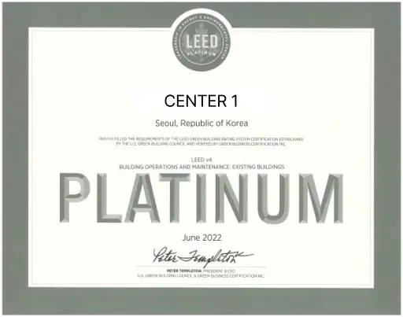
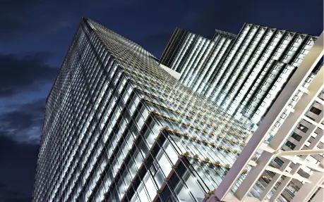
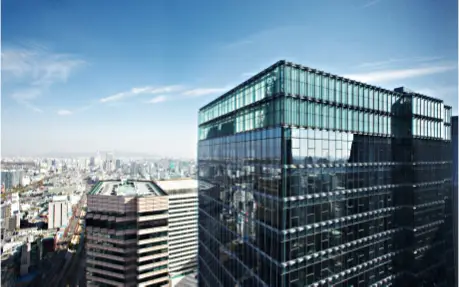
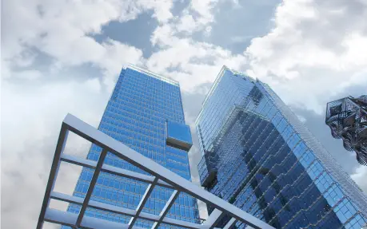
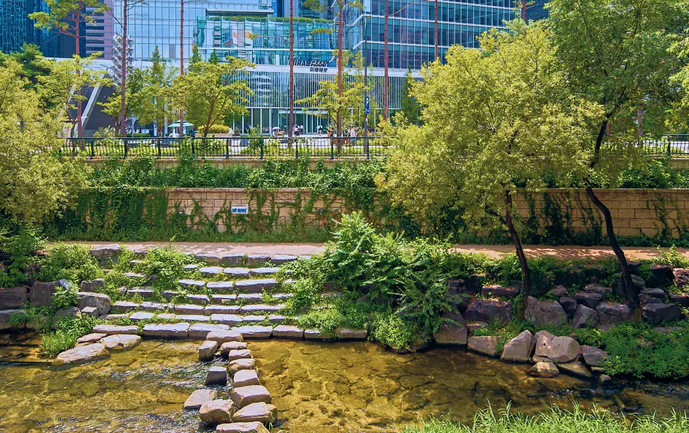
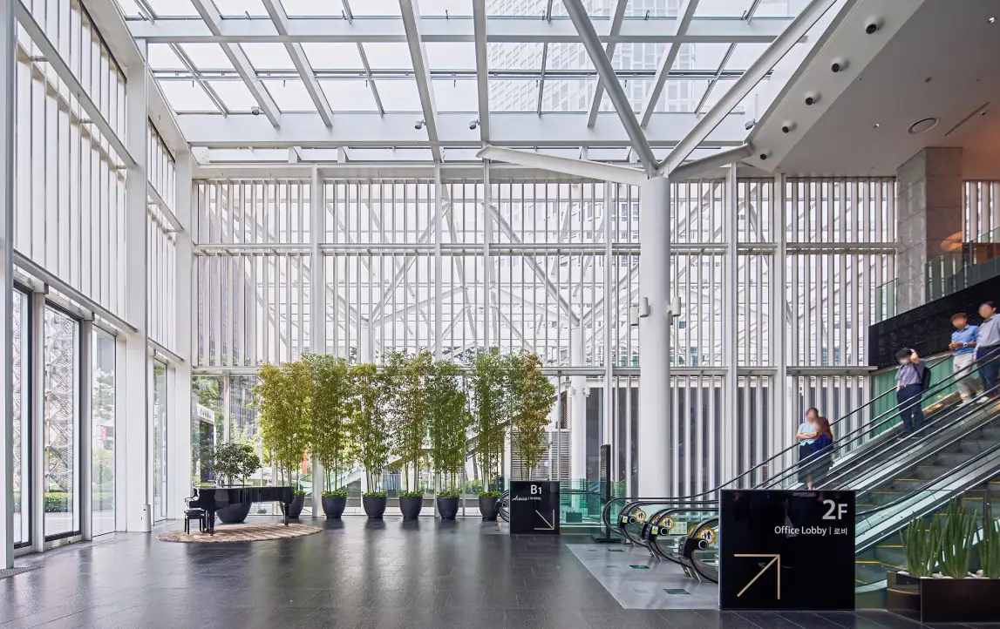
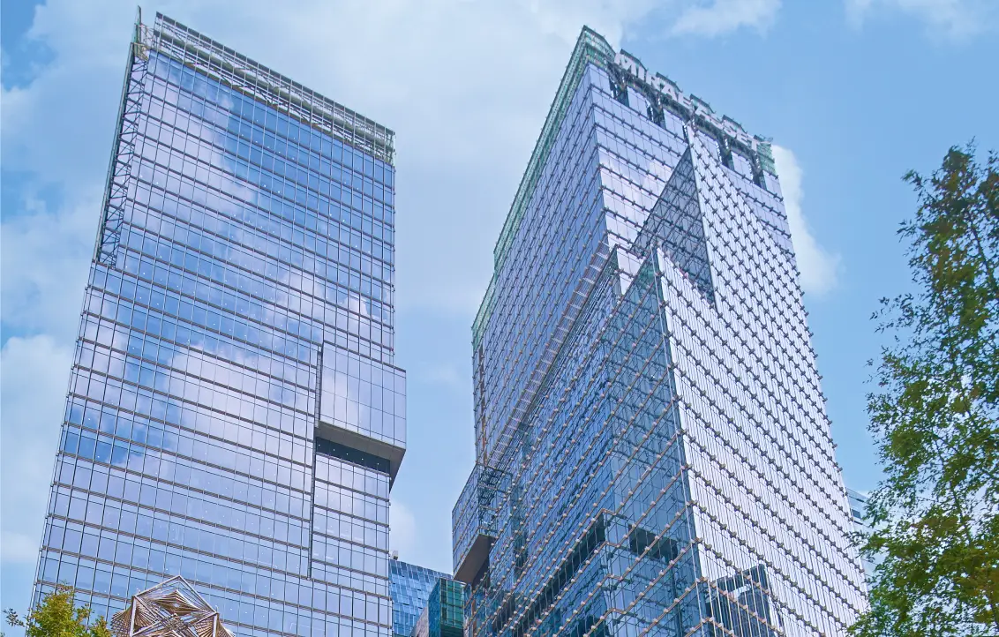
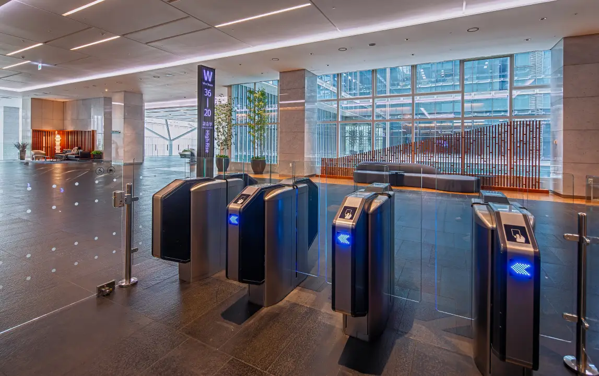

거대자본을 투자한 금융사의 사업성과 임대오피스가 가지는 효율성을 추구하면서도 동시에 공공의 공익성을 동시에 만족시 키고 있습니다.
서울 중구
수하동 67
서울 중구
수하동 67
판매시설
업무시설
9,097.3m²
5,094.78m²
미래에셋센터원은 거대 자본을 투자한 금융사로서 사업성과 임대 오피스의 효율성을 추구하면서
공공의 공익을 충족시키며 국내 건축가로서 자부심을 표현하고자 하였습니다.

미래에셋센터원은 미국 그린빌딩위원회(USGBC)의 LEED(Leadership in Energy and Environmental Design) 인증 최고 등급인 플래티넘(Platinum)을 획득했습니다. LEED는 국제적으로 통용되는 친환경 건축 인증제도로, 플래티넘은 가장 높은 등급입니다.
미래에셋센터원은 국내 최고 수준의 친환경 실천을 통해 입주사들이 에너지 및 관리비 절감의 혜택을 누릴 수 있게 합니다. 단열 성능이 우수한 Low-E 복층유리를 사용하고, 전체 커튼월의 각 유닛마다 환기창을 설치했습니다. 또한, 5층 포디움 지붕 및 옥상 지붕에는 옥상 조경을 설치했으며, 아트리움 상부에는 프릿글라스를 사용했습니다. 이를 통해 미래에셋센터원은 도심 속 대표 친환경 건축물로 자리 잡을 수 있었습니다.




Center1은 청계천과 한빛공원의 인접성 덕분에 입주사와 이용객들에게 더 나은 업무 환경과 여가 활동의 기회를 제공하고 있습니다. 청계광장과 청계천에서 펼쳐지는 다양한 이벤트와 축제는 입주사와 이용객이 문화적 혜택을 누릴 수 있는 장소로 활동되며, 최첨단 디지털 기술을 접목한 공간인 한빛공원은 오피스 직원들에게 휴식과 재충전의 공간을 제공합니다.
이용자를 위한 감성적인 요소 뿐 아니라 에너지 절약을 위해 Low-E 복층유리 커튼월을 사용하고, 중수조와 빗물 저수조 설치 및 빙축열조를 적극적으로 도입하여 운영비 절감과 환경보호를 실현하였습니다. 2010년 한국토지주택공사로부터 우수 친환경 건축물로 인증받았으며 대한민국 오피스 빌딩 중 최초로 미국 친환경 건축위원회에서 만든 친환경건축물등급 LEED에서 Core&Shell 부분 SILVER 등급을 인증 받았습니다.

Center1은 청계천과 한빛공원의 인접성 덕분에 입주사와 이용객들에게 더 나은 업무 환경과 여가 활동의 기회를 제공하고 있습니다. 청계광장과 청계천에서 펼쳐지는 다양한 이벤트와 축제는 입주사와 이용객이 문화적 혜택을 누릴 수 있는 장소로 활동되며, 최첨단 디지털 기술을 접목한 공간인 한빛공원은 오피스 직원들에게 휴식과 재충전의 공간을 제공합니다.
이용자를 위한 감성적인 요소 뿐 아니라 에너지 절약을 위해 Low-E 복층유리 커튼월을 사용하고, 중수조와 빗물 저수조 설치 및 빙축열조를 적극적으로 도입하여 운영비 절감과 환경보호를 실현하였습니다. 2010년 한국토지주택공사로부터 우수 친환경 건축물로 인증받았으며 대한민국 오피스 빌딩 중 최초로 미국 친환경 건축위원회에서 만든 친환경건축물등급 LEED에서 Core&Shell 부분 SILVER 등급을 인증 받았습니다.

Center1은 청계천과 한빛공원의 인접성 덕분에 입주사와 이용객들에게 더 나은 업무 환경과 여가 활동의 기회를 제공하고 있습니다. 청계광장과 청계천에서 펼쳐지는 다양한 이벤트와 축제는 입주사와 이용객이 문화적 혜택을 누릴 수 있는 장소로 활동되며, 최첨단 디지털 기술을 접목한 공간인 한빛공원은 오피스 직원들에게 휴식과 재충전의 공간을 제공합니다.
이용자를 위한 감성적인 요소 뿐 아니라 에너지 절약을 위해 Low-E 복층유리 커튼월을 사용하고, 중수조와 빗물 저수조 설치 및 빙축열조를 적극적으로 도입하여 운영비 절감과 환경보호를 실현하였습니다. 2010년 한국토지주택공사로부터 우수 친환경 건축물로 인증받았으며 대한민국 오피스 빌딩 중 최초로 미국 친환경 건축위원회에서 만든 친환경건축물등급 LEED에서 Core&Shell 부분 SILVER 등급을 인증 받았습니다.

Center1은 청계천과 한빛공원의 인접성 덕분에 입주사와 이용객들에게 더 나은 업무 환경과 여가 활동의 기회를 제공하고 있습니다. 청계광장과 청계천에서 펼쳐지는 다양한 이벤트와 축제는 입주사와 이용객이 문화적 혜택을 누릴 수 있는 장소로 활동되며, 최첨단 디지털 기술을 접목한 공간인 한빛공원은 오피스 직원들에게 휴식과 재충전의 공간을 제공합니다.
이용자를 위한 감성적인 요소 뿐 아니라 에너지 절약을 위해 Low-E 복층유리 커튼월을 사용하고, 중수조와 빗물 저수조 설치 및 빙축열조를 적극적으로 도입하여 운영비 절감과 환경보호를 실현하였습니다. 2010년 한국토지주택공사로부터 우수 친환경 건축물로 인증받았으며 대한민국 오피스 빌딩 중 최초로 미국 친환경 건축위원회에서 만든 친환경건축물등급 LEED에서 Core&Shell 부분 SILVER 등급을 인증 받았습니다.